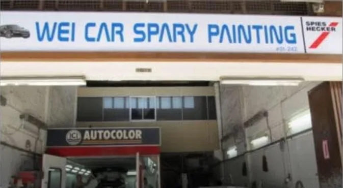

Yishun Industrial Park A · Since 2012
Car spray painting in Yishun, colour-matched to your car.
Wei Car Spray Painting repairs scratches, dents and scuffed bumpers and resprays panels or whole cars, in a spray booth at Blk 1017 Yishun Industrial Park A. Send photos on WhatsApp and we tell you what your car needs.
★ 100% recommend on Facebook from 238 reviews (checked 1 November 2026)
What needs fixing?
Pick the damage, see how we fix it
Panel spray painting
Respray one panel or a few: doors, bumpers, bonnet, fenders. Colour-matched to the rest of your car.
More details →Full car respray
Whole-car repaint for faded, peeling or tired paint, in the original colour or a new one.
More details →Scratch repair
Key marks, scuffs and scrapes: polished out if shallow, repainted if they go through the paint.
More details →Dent repair
Door dings, fender dents and car park knocks: panel beaten, smoothed and repainted.
More details →Bumper repair
Scuffed corners, cracks and scrapes on front and rear bumpers, repaired and repainted.
More details →Servicing & repairs
Repair and servicing work at the same workshop, so bodywork and mechanical jobs can be done together.
More details →
The workshop
Three units, one spray booth, one job done properly
We work from units #01-242, #01-246 and #01-252 at Blk 1017 Yishun Industrial Park A. Panels are prepared in the workshop and painted inside the spray booth, so dust stays out of the wet paint.
About Wei Car Spray Painting →How it works
From photo to fresh paint
- Send photosWhatsApp the damage in daylight with your car model.
- We adviseWe say if it needs polishing, panel paint or more.
- Bring the car inWe inspect it and confirm the work and price.
- CollectColour-matched, polished and checked in daylight.
Proof
Trusted by Yishun drivers
Our customers rate us on Facebook. Read what they say, and see recent jobs on Instagram.
- 100%recommend on Facebook
- 238Facebook reviews
- 2012registered as a Pte Ltd
- 3units at Blk 1017 Yishun
Guides
Before you book a paint job
Panel spray or full respray: which does your car need?
Most cars only need a few panels painted. Here is how to tell when that is enough and when a full respray makes more sense.
GuideCan a car scratch be fixed without spray painting?
Often, yes. It depends on how deep the scratch goes. The fingernail test tells you in a few seconds.
GuideHow car paint colour matching works
A good repair is one you cannot spot. That comes down to the paint code, careful mixing and blending.
GuideShould you repair or replace a damaged car bumper?
Most bumper damage in Singapore comes from tight car parks and kerbs, and most of it can be repaired. Here is how to tell.
GuideHow to choose a car spray painting workshop
Paint jobs look similar on the first day. The difference shows months later. Here is what to ask before you book.
Questions
Quick answers
Where is Wei Car Spray Painting?
At Blk 1017 Yishun Industrial Park A, units #01-242, #01-246 and #01-252, Singapore 768759, in the Yishun industrial estate.
How do I get a quote for spray painting?
WhatsApp clear photos of the damage in daylight plus your car model to 9638 3306. We reply with what the job needs; the final price is confirmed after we see the car.
Do I need to respray the whole car?
Usually not. Scratches, dents and scuffs on a few panels only need those panels painted and colour-matched. A full respray suits paint that is faded or peeling all over.
Do you also do car servicing and repairs?
Yes. Besides spray painting, the workshop is listed for car repair and servicing. Call 6759 3229 to ask about your car.
Visit
Find us in Yishun
Blk 1017 Yishun Industrial Park A
#01-242, #01-246 and #01-252
Singapore 768759
Opening hours: Mon to Fri 9am to 7pm, Sat 9am to 5pm (please call to confirm before coming).
Phone 6759 3229 · Mobile 9638 3306
Email weileng619@yahoo.com
Got a scratch, dent or scuff?
WhatsApp photos in daylight with your car model. We tell you what it needs.